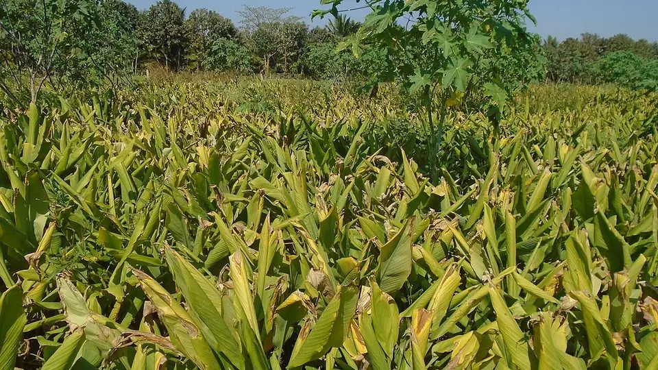

மஞ்சள் சாகுபடி — விலை பதப்படுத்தலில்
Turmeric Farming in the Erode Belt
எட்டு மாத உழைப்பின் விலை, அறுவடைக்குப் பிந்தைய மூன்று வாரங்களில் தீர்மானிக்கப்படுகிறது — வேகவைத்தல், உலர்த்துதல், மெருகூட்டல். ஈரோடு மண்டலத்தின் முழு முறை இங்கே.
✍️ Kunal Rajput — KrashiMitra⏱️ 9 நிமிடம் படிக்க📅 ஆகஸ்ட் 2026

நிற்கும் மஞ்சள் வயல். தமிழ்நாட்டில் நடவு ஏப்ரல்-மேயில் நடக்கும், பயிர் 8-9 மாதம் வயலில் இருக்கும்.
மஞ்சளின் சுழற்சி — ஒரே பார்வையில்
🗓️
8-9 மாதம்
பயிர்க் காலம்
🔥
45-60 நிமிடம்
வேகவைக்கும் நேரம்
⚖️
5:1
பச்சை : உலர் மஞ்சள்
📖
முன்னுரை
மஞ்சளில் மிகப் பெரிய தவறான புரிதல் இதுதான் — வருமானம் வயலில்
தீர்மானிக்கப்படுகிறது என்பது. உண்மையில் மஞ்சளின் விலை அறுவடைக்குப்
பிறகுதான் தீர்மானிக்கப்படுகிறது — வேகவைத்தல், உலர்த்துதல்,
மெருகூட்டல் என்ற மூன்று படிகளில். ஒரே வயலின் மஞ்சள், சரியாக
வேகவைத்து உலர்த்தப்பட்டால் பளபளப்பாகவும் கனமாகவும் விற்கும்; அதே மஞ்சள்
அலட்சியமாக உலர்த்தப்பட்டால் மங்கலாக, இலகுவாக, குறைந்த விலைக்கு.
அதனாலேயே ஈரோடு நாட்டின் மிகப் பெரிய மஞ்சள் சந்தைகளில்
ஒன்றாகக் கருதப்படுகிறது — அங்கு சாகுபடியை விட பதப்படுத்தும்
பாரம்பரியம் பெரியது. இந்தக் கட்டுரை நடவு முதல் மெருகூட்டல் மற்றும் விற்பனை
வரை, மஞ்சளின் முழுச் சுழற்சியைத் தருகிறது.
விளம்பரம்
🔍
மஞ்சளின் சுழற்சி — ஒரே பார்வையில்
விஷயம்
விவரம்
நடவு
முதல் பருவமழைக்குப் பின் — பொதுவாக ஏப்ரல்-மே
பயிர்க் காலம்
8-9 மாதங்கள்
அறுவடை
ஜனவரி-மார்ச், இலைகள் மஞ்சளாகிக் காய்ந்தவுடன்
வேகவைத்தல்
45-60 நிமிடம், கிழங்கு மென்மையாகும் வரை
உலர்த்துதல்
வெயிலில் 10-15 நாள்
பச்சை : உலர்ந்தது விகிதம்
கிட்டத்தட்ட 5:1 — 5 கிலோ பச்சை மஞ்சளிலிருந்து 1 கிலோ உலர் மஞ்சள்
முதன்மை ரகம்
ஈரோடு (சேலம்) லோக்கல் — தமிழ்நாட்டின் மிகப் பரவலான வணிக ரகம்
💡
5:1 விகிதத்தை நினைவில் வையுங்கள். யாராவது பச்சை மஞ்சளின்
விலையைச் சொன்னால், அதை 5-ஆல் பெருக்கி உலர் மஞ்சள் விலையுடன் ஒப்பிட்டுப்
பாருங்கள் — பதப்படுத்தும் உழைப்புக்கு விலை கிடைக்கிறதா இல்லையா என்பது
அப்போதுதான் தெரியும்.
🌱
நடவு — விதைக் கிழங்கும் வயல் தயாரிப்பும்
விதைக் கிழங்குத் தேர்வு: பருமனான, கணுக்களுடன் கூடிய, அழுகல் இல்லாத தாய்க் கிழங்கு அல்லது விரல் கிழங்கை எடுங்கள். ஒவ்வொரு துண்டிலும் குறைந்தது ஒரு நல்ல கண் இருக்க வேண்டும்.
விதை நேர்த்தி: நடவுக்கு முன் கிழங்கை ட்ரைக்கோடெர்மா அல்லது பரிந்துரைக்கப்பட்ட பூஞ்சைக்கொல்லிக் கரைசலில் நனைப்பது — கிழங்கு அழுகல் இந்த ஒரே படியால் பெருமளவு தடுக்கப்படுகிறது.
பாத்தி: மேட்டுப் பாத்தி அல்லது சால்-வரப்பு முறையையே வையுங்கள். மஞ்சளுக்கு ஈரம் தேவை, ஆனால் வேரின் அருகே தேங்கும் நீர் அதைக் கொன்றுவிடும்.
தொழு உரம்: நடவுக்கு முன் வயலில் நன்கு மக்கிய தொழு உரம் அல்லது மட்கு உரத்தைக் கலப்பது — மஞ்சள் அங்கக ஊட்டத்திற்கு மிக நன்றாகப் பதிலளிக்கும்.
மூடாக்கு: நடவு முடிந்தவுடன் பசுமையான இலைகளால் மூடுங்கள். இது களையைத் தடுக்கும், ஈரத்தைக் காக்கும், மக்கி உரமாகவும் மாறும் — மூன்று வேலைகளும் இலவசம்.
🎯
தென்னைத் தோட்டத்தில் மஞ்சள் ஊடுபயிர் கொங்கு மண்டலத்தின்
பழைய முறை — தென்னையின் நிழல் மஞ்சளுக்குப் பொருந்தும், ஒரே பாசனத்தில்
இரண்டு பயிர்கள் கிடைக்கும்.
தென்னை வழிகாட்டியை இங்கே படியுங்கள் →
🦠
கிழங்கு அழுகல் — மஞ்சளின் மிகப் பெரிய இழப்பு
மஞ்சளில் மிக அதிக இழப்பு வேருக்குக் கீழேயே நடக்கிறது, அங்கு விவசாயி
தாமதமாகவே பார்க்கிறார். அடையாளம் மேலிருந்துதான் தொடங்குகிறது, எனவே இந்த
வேறுபாடுகளை நினைவில் வையுங்கள்.
அடையாளக் குறிப்பு
✅ ஆரோக்கியம்
❌ தாக்கப்பட்டது
இலை
அடர் பச்சை, நிமிர்ந்தது
கீழ் இலை முதலில் மஞ்சள், பின் முழு செடியும் வாடும்
தண்டின் அடிப்பகுதி
வலிமையானது, வறண்டது
நீர் போன்ற மென்மை, இழுத்தால் எளிதில் வந்துவிடும்
கிழங்கு
இறுக்கம், பளபளக்கும் மஞ்சள்-ஆரஞ்சு
அழுகியது, துர்நாற்றம், அழுத்தினால் நசுங்கும்
வயலில் பரவல்
சீராக
நீர் தேங்கும் இடத்திலிருந்து வட்டமான திட்டாகப் பரவும்
முதல் பாதுகாப்பு வடிகால்: நீர் தேங்காத வயலில் கிழங்கு அழுகல் குறைவு. வடிகாலைப் பருவமழைக்கு முன் வெட்டுங்கள், பின் அல்ல.
விதைக் கிழங்கு நேர்த்தி: நோய் பெரும்பாலும் விதைக் கிழங்குடன்தான் வயலுக்குள் வருகிறது.
தாக்கப்பட்ட செடிகளை அகற்றுங்கள்: அதே இடத்தின் மண்ணில் மீண்டும் மஞ்சள் வைக்காதீர்கள்.
பயிர் சுழற்சி: தொடர்ந்து ஒரே வயலில் மஞ்சள் எடுப்பது அழுகலை உறுதிசெய்கிறது.
விளம்பரம்
🔥
உண்மையான வருமானம் இங்கே — வேகவைத்தல், உலர்த்துதல், மெருகூட்டல்
அறுவடைக்குப் பின் மஞ்சளைப் பதப்படுத்த வேண்டும். இது வெறும்
உலர்த்துதல் அல்ல — வேகவைப்பதால் கிழங்கின் உள்ளிருக்கும் நிறம் சீராகப் பரவும்,
பச்சை வாசனை போகும், மஞ்சள் நீண்ட நாள் கெடாமல் இருக்கும்.
நீரில் 45-60 நிமிடம், கிழங்கு மென்மையாகி நுரை-ஆவியில் தனி வாசனை வரும் வரை
நிறம் சீராகும், பச்சை வாசனை போகும், சேமிப்பு மேம்படும்
3. உலர்த்துதல்
கான்கிரீட் தளத்தில் மெல்லிய அடுக்காக வெயிலில் 10-15 நாள், தினமும் புரட்டுங்கள்
ஈரம் குறையாமல் மெருகு ஏறாது
4. மெருகூட்டல்
கையால் வலைப் பையில் தேய்த்து, அல்லது மின்சார டிரம்மில்
மேலுள்ள கரடுமுரடான தோல் நீங்கி பளபளப்பு வரும் — விலை நேரடியாக இதனாலேயே உயரும்
⚠️
பளபளப்பை அதிகரிக்க எந்தச் சாயத்தையும் ரசாயனத்தையும்
கலக்காதீர்கள். உணவுப் பொருளில் கலப்படம் சட்டப்படி குற்றம்;
ஏற்றுமதியில் சரக்கு திரும்பி வரும்; பிடிபட்டால் முழுப் பகுதியின் நம்பகத்
தன்மையும் விழுகிறது. பளபளப்பு மெருகூட்டலால் வர வேண்டும், சாயத்தால் அல்ல.
💰
விற்பனை — ஈரோடு சந்தையும் விலை விளையாட்டும்
மஞ்சள் சேமிக்கக்கூடிய பயிர்: சரியாக உலர்த்தி மெருகூட்டப்பட்ட மஞ்சள் பல மாதங்கள் தாங்கும். எனவே அறுவடை முடிந்தவுடன் விற்க வேண்டிய கட்டாயம் இல்லை — காய்கறிக்கும் மஞ்சளுக்கும் இதுதான் மிகப் பெரிய வித்தியாசம்.
தாய்க் கிழங்கையும் விரல் கிழங்கையும் தனியாக விற்கவும்: இரண்டின் தேவையும் விலையும் வேறு; கலந்து விற்றால் குறைந்த விலையே கிடைக்கும்.
ஈரப்பதம் 10% அளவில்: அதிக ஈரமுள்ள மஞ்சள் சேமிப்பில் பூஞ்சை பிடிக்கும், விலையும் பிடித்தம் ஆகும்.
விலையை முன்பே பாருங்கள்: வண்டி ஏற்றுவதற்கு முன் இன்றைய மஞ்சள் விலையைப் பார்ப்பதே மிக மலிவான நடவடிக்கை.
⚠️
மஞ்சள் விலை ஆண்டுக்காண்டு பெரிதும் ஏறி இறங்குகிறது; இந்தக் கட்டுரை எந்த விலை
முன்னறிவிப்பையும் தரவில்லை. விற்பதற்கு முன் உங்கள் சந்தையின் அன்றைய விலையையும்,
மாவட்ட வேளாண்மைத் துறை / சந்தைக் குழுவிடமும்
உறுதிப்படுத்திக் கொள்ளுங்கள்.
🚫
இந்தத் தவறுகளை ஒருபோதும் செய்யாதீர்கள்
நேர்த்தி செய்யாத விதைக் கிழங்கை நடுவது — கிழங்கு அழுகல் பெரும்பாலும் விதையுடன்தான் வயலுக்கு வருகிறது.
அதிக நேரம் வேகவைப்பது — கிழங்கு நொறுங்கும், உலர்த்தும்போது உடைந்து எடை குறையும்.
மண் தரையில் உலர்த்துவது — மண் ஒட்டும், மெருகு கெடும், வாங்குபவர் விலையைப் பிடித்தம் செய்வார்.
பாதி உலர்ந்த மஞ்சளை மெருகூட்டுவது — பளபளப்பு ஏறாது, சேமிப்பில் பூஞ்சை பிடிக்கும்.
சாயமோ ரசாயனமோ கலப்பது — இது குற்றம், முழுச் சரக்கையும் ரத்து செய்யவைக்கும்.
நடவு — முதல் மழைக்குப் பின்; விதைக் கிழங்கு நேர்த்தி; உடனே மூடாக்கு
ஜூன்-ஆகஸ்ட்
களை எடுத்தல், மண் அணைத்தல், வடிகால் வெட்டுதல், கிழங்கு அழுகல் கண்காணிப்பு
செப்டம்பர்-நவம்பர்
கிழங்கு பிடிக்கும் நேரம் — ஈரத்தைப் பராமரியுங்கள்; இலைப் புள்ளி நோயைக் கவனியுங்கள்
டிசம்பர்
பாசனத்தைக் குறையுங்கள்; இலைகள் மஞ்சளாவதற்குக் காத்திருங்கள்
ஜனவரி-மார்ச்
அறுவடை → வேகவைத்தல் → உலர்த்துதல் → மெருகூட்டல் → விற்பனை
✅
முடிவுரை
மூன்று விஷயங்களை நினைவில் வையுங்கள். முதலாவது — மஞ்சளின் விலை
பதப்படுத்தலில் உருவாகிறது: 45-60 நிமிடம் வேகவைத்தல், 10-15 நாள்
உலர்த்துதல், பின் மெருகூட்டல். இரண்டாவது — கிழங்கு அழுகல் விதையிலிருந்தும்
நீரிலிருந்தும் வருகிறது, எனவே விதை நேர்த்தியையும் வடிகாலையும் இரண்டையும்
முதலிலேயே செய்யுங்கள். மூன்றாவது — மஞ்சள் தாங்கும் பயிர், எனவே
அறுவடை நாளிலேயே விற்க வேண்டிய கட்டாயம் இல்லை; விலையைப் பார்த்து விற்கவும்.
வயலில் உழைப்பு எட்டு மாதம், ஆனால் விலையைத் தீர்மானிக்கும் மூன்று வாரங்கள் அறுவடைக்குப் பிறகுதான் வருகின்றன.
விளம்பரம்
❓
அடிக்கடி கேட்கப்படும் கேள்விகள்
1மஞ்சள் எத்தனை மாதத்தில் அறுவடைக்கு வரும்?
மஞ்சள் நடவு செய்த 8-9 மாதங்களுக்குப் பின் அறுவடைக்குத் தயாராகிறது. தமிழ்நாட்டில் நடவு முதல் பருவமழைக்குப் பின் ஏப்ரல்-மேயில் நடப்பதால், அறுவடை ஜனவரி முதல் மார்ச் வரை வருகிறது — இலைகள் மஞ்சளாகிக் காய்ந்தவுடன்.
2மஞ்சளை எவ்வளவு நேரம் வேகவைக்க வேண்டும்?
45 முதல் 60 நிமிடம் — அதாவது கிழங்கு மென்மையாகி, கொதிக்கும் நீரிலிருந்து தனி வாசனை வரத் தொடங்கும் வரை. இதைவிட அதிக நேரம் வேகவைத்தால் கிழங்கு நொறுங்கிவிடும், உலர்த்தும்போது உடைந்து எடையும் குறையும்.
35 கிலோ பச்சை மஞ்சளிலிருந்து எவ்வளவு உலர் மஞ்சள் கிடைக்கும்?
கிட்டத்தட்ட 1 கிலோ — பச்சை மற்றும் உலர் மஞ்சளின் விகிதம் தோராயமாக 5:1. அதனாலேயே பச்சை மஞ்சள் விலையைக் கேட்டவுடன் அதை 5-ஆல் பெருக்கி உலர் மஞ்சள் விலையுடன் ஒப்பிட வேண்டும்.
4turmeric drying time in tamil — how many days?
கான்கிரீட் தளத்தில் மெல்லிய அடுக்காகப் பரப்பி வெயிலில் 10-15 நாள் ஆகும், தினமும் புரட்டுவது அவசியம். பாதி உலர்ந்த மஞ்சளில் மெருகு ஏறாது, சேமிப்பில் பூஞ்சையும் பிடிக்கும்.
5மஞ்சளில் கிழங்கு அழுகலை எப்படித் தடுப்பது?
முதல் மற்றும் மிக மலிவான தீர்வு வடிகால் — நீர் தேங்காத வயலில் கிழங்கு அழுகல் மிகக் குறைவு. இதனுடன் நடவுக்கு முன் விதைக் கிழங்கு நேர்த்தி, மேட்டுப் பாத்தி மற்றும் பயிர் சுழற்சியையும் கடைப்பிடியுங்கள், ஏனெனில் நோய் பெரும்பாலும் விதைக் கிழங்குடன்தான் வயலை அடைகிறது.
6தமிழ்நாட்டில் எந்த மஞ்சள் ரகம் பயிரிடப்படுகிறது?
ஈரோடு (சேலம்) லோக்கல் தமிழ்நாட்டின் மிகப் பரவலான வணிக ரகம்; ஈரோடு-சேலம் மண்டலத்தில் அதுவே அதிகம் நடப்படுகிறது. ரகம் தேர்ந்தெடுப்பதற்கு முன் உங்கள் மாவட்ட KVK-விடம் உறுதிப்படுத்துங்கள், ஏனெனில் பரிந்துரை மண்டலத்துக்கு ஏற்ப மாறும்.
7மஞ்சளுக்கு ஏன் மெருகூட்டல் செய்யப்படுகிறது?
மெருகூட்டலால் உலர் மஞ்சளின் மேலுள்ள கரடுமுரடான தோல் நீங்கி பளபளப்பு வரும், அதன் மீது சந்தையில் நேரடியாக விலை உயரும். இது கையால் வலைப் பையில் தேய்த்தோ மின்சாரத்தில் இயங்கும் டிரம்மிலோ செய்யப்படுகிறது — இதற்குச் சாயமோ ரசாயனமோ கலப்பது தவறு மட்டுமல்ல, சட்டப்படி குற்றமும்கூட.
8தென்னைத் தோட்டத்தில் மஞ்சள் வைக்கலாமா?
ஆம் — தென்னைக்கு அடியில் மஞ்சள் ஊடுபயிர் கோயம்புத்தூர்-ஈரோடு மண்டலத்தின் பழைய, சோதிக்கப்பட்ட முறை. தென்னையின் நிழல் மஞ்சளுக்குப் பொருந்துகிறது, இரண்டு பயிர்களும் ஒரே பாசனத்தில் ஓடுவதால் ஏக்கருக்கான வருமானம் அதிகரிக்கிறது.
🌾
KrashiMitra.in — உங்கள் நம்பகமான வேளாண் நண்பன்
சந்தை விலை, அரசுத் திட்டங்கள், விதை-உரத் தகவல், பயிர் நோய்க்கான தீர்வு — அனைத்தும் தமிழில்.